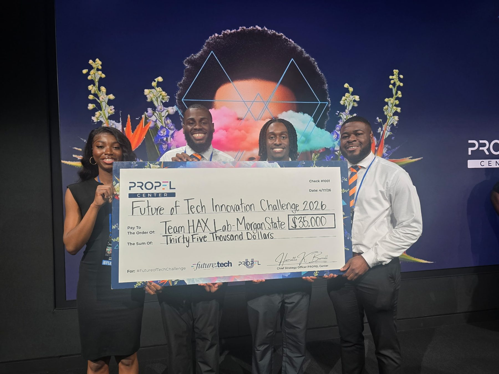
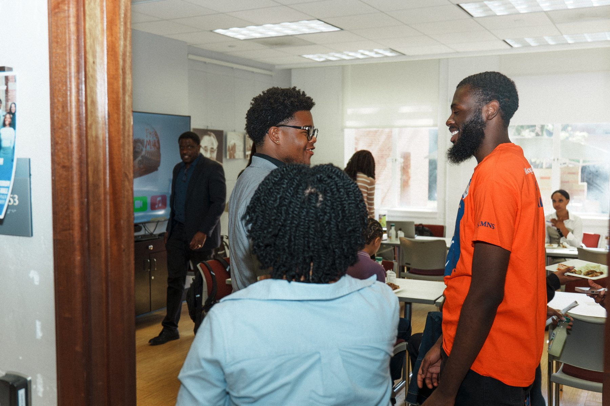
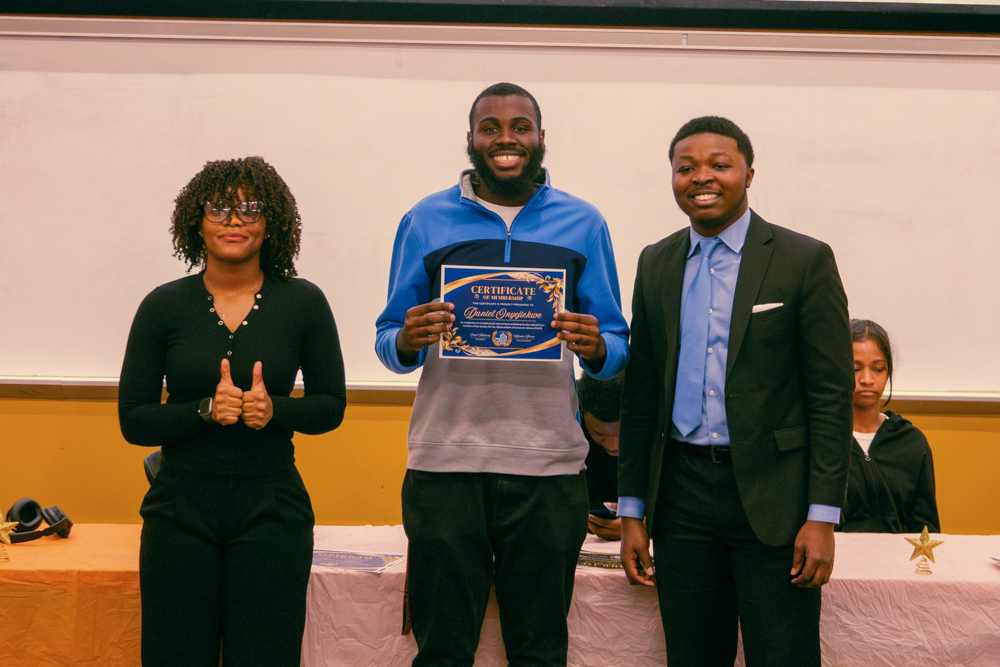
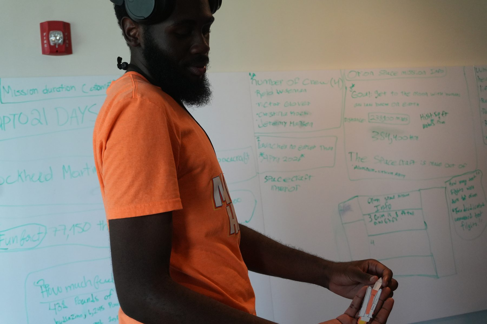
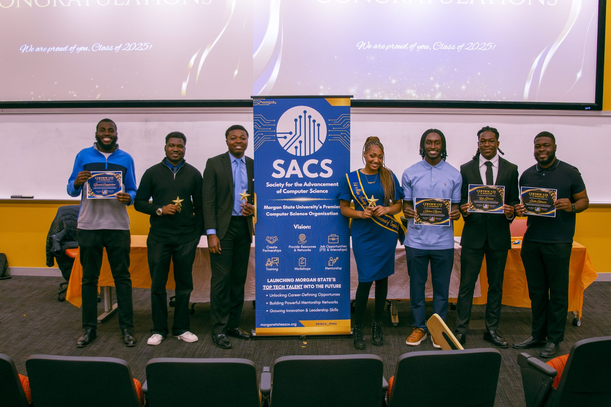
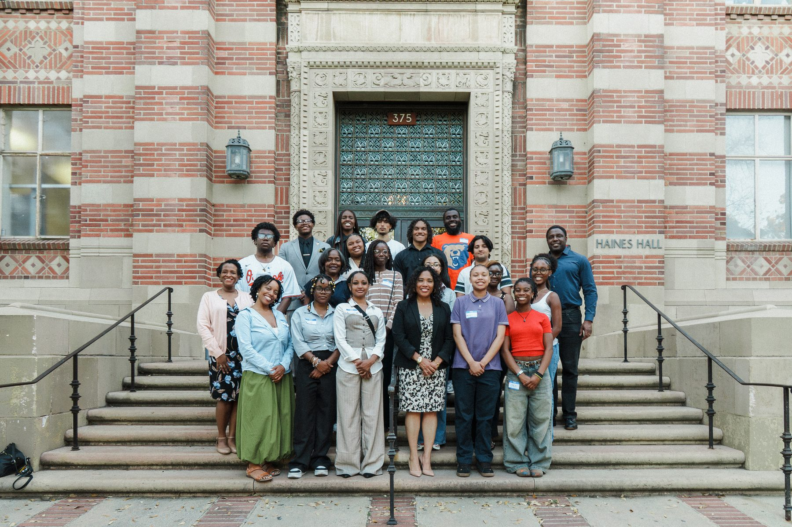

Emory University
Expected May 2028M.S. Computer Science
I am a Computer Science student and software developer with experience building full stack web applications, interactive games, and user focused digital experiences. I enjoy turning ideas into functional systems and improving them through iteration.
Computer Science training with a focus on building real systems.
M.S. Computer Science
B.S. Computer Science · GPA: 3.8 / 4.00 · Magna Cum Laude
NSF-funded AI research, teaching, and community work in computer science.
Selected work. Click a project to see details, screenshots, and links.
Unified a 5-person Agile team's features into a demo-ready presidential briefing system — built 7 of 37 AI agents, a live threat dashboard, and a global radar map.
1st place AI social coaching platform built with a 4-person team — voice coaching, sentiment review, safe-zone heatmaps, and a Meta Quest 3 prototype.
Interactive museum web experience built at the HAX Lab — 7 themed rooms, 9 mini-games, and 2 AI chatbots guiding visitors. Preparing a usability study.
AI music and poetry companion with 6 integrations (Spotify, Genius, TTS, image and song generation) and voice input. Contributing toward a research paper.
VR concussion simulation with 30 screens, 2 quiz flows, and 2 scenarios — unit tested with 6 users. Preparing a usability study.
Full-stack creative platform for Morgan State's MSU Poet Club community of 100+ members, supporting creative content sharing and engagement.
Full stack sneaker store with CRUD, 4 core features including cart and favorites, and dynamic account-based storage.
Contributed to a 4-person team building a financial assistance app for college students using Expo and TypeScript in an Agile/Scrum environment.
Comparative analysis of Meta Quest 2, Quest 3, and Quest Pro — hardware specs, comfort, immersion, and best-use scenarios for developers, educators, and enterprise.
Comprehensive setup guide and best practices for Unity Cloud Services — covers Cloud Build, Cloud Save, DevOps version control, and Asset Manager, with troubleshooting and pricing breakdowns.
Interactive music data visualization platform that turns songs, artists, lyrics, listening habits, and music trends into clear visual insights, including NLP-based lyric emotion analysis.
Two-part Android health tracking app — Part 1 logs daily water intake with a RecyclerView-backed list and local persistence; Part 2 adds calorie tracking with a fragment-based dashboard and Bottom Navigation.
Android app for browsing movies currently playing in theaters, pulling live data from The Movie Database API with a responsive RecyclerView layout and Glide-powered poster loading.
Worked through Bloomberg's BBIT technical training curriculum — hands-on labs spanning portfolio management, processes and multi-threading, message queuing (RabbitMQ), and web development.
Web-based interactive album-cover game built on a modern frontend stack, focused on interactive game flow and user engagement.
Documenting observations and service-flow issues connected to student support systems — Bear Essentials, QLess, Morgan Gateway, and Self Service Banner — written up in LaTeX using ACM formatting conventions.
Recognition, hackathons, and student org involvement.
Articles, features, and media mentions.
"They Built the Future—and Won: Morgan Students Capture National AI Innovation Title" — coverage of Team HAX Lab's 1st-place win at the PROPEL Center Future of Tech Innovation Challenge.
"Morgan State Students Win National AI Innovation Challenge With SocialSense AI" — feature on the team's $35,000 grand-prize win.
"Propelling Toward the Future: HBCU Students Design AI-powered Solutions" — national coverage of the winning SocialSense AI team.
"Team HAX Lab Wins National AI Innovation Challenge" — recognition from the NSF Institute for Trustworthy AI in Law & Society.
"Drones at the Forefront" — coverage of the Inaugural HBCU Brain Drone Race, which I helped plan and run as part of the HAX Lab team (logistics, drone testing, and calibration).
"Morgan Students Discover New Pathways via UCLA Partnership" — coverage of the week-long SCMNS trip to UCLA I took part in, touring labs and the Ralph J. Bunche Center.
Photos from events, mentoring, and milestones.






Want to connect about internships, projects, or collaboration? Reach out.